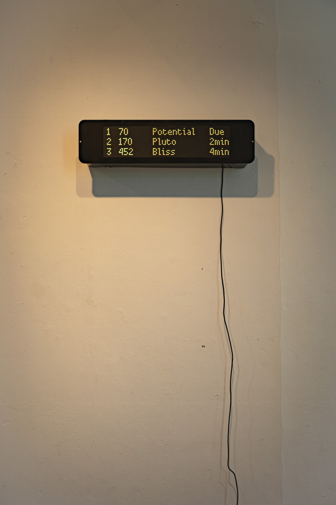
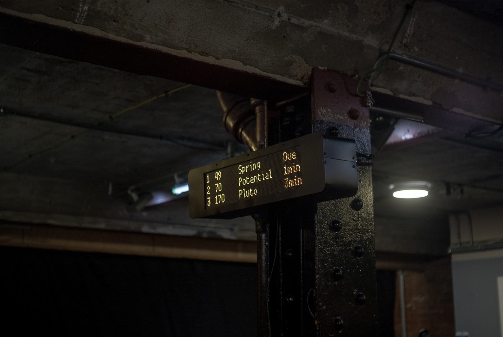
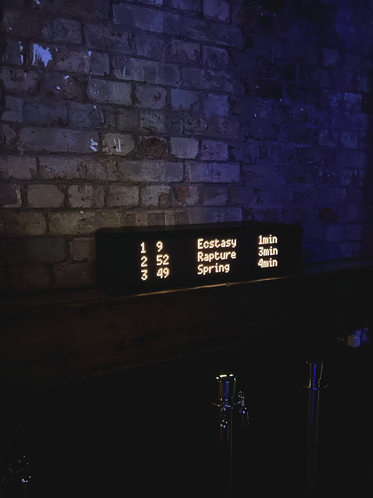
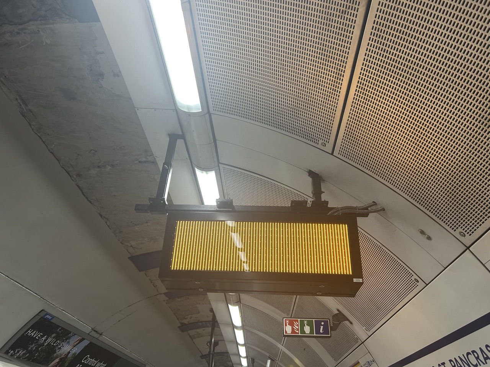

Abstract
In this practice-based reflection, the author provides an account of a piece of their sculpture. This artwork is a replica of an electronic display at a bus stop in London, with the destinations changed to words such as “Pluto”, “Bliss”, and “Ecstasy”. The article begins with an ekphrasis of the artwork, before elaborating on its formal and critical operations. A theoretical interpretation is then provided, which draws on affect theory, psychoanalysis, and philosophy. An account of three instances of the artwork’s display is given, which is used to show how the work’s meaning can be understood in the context of different architectural environments and exhibition spaces. In the closing section of the text, the author reflects on the implications of certain thematic strands of the work and sketches out ideas for further iterations of the piece, considering how public signage can structure desires and control how the public moves through space.
Keywords

Introduction
A black box with a flat face and curved edges is suspended above head height, showing a pixelated yellow screen with text on it. It is an electronic display like those at bus stops or tube stations in London. The screen shows three destinations, ranked according to when they are due to arrive; the names of destinations are strange: Pluto, Spring, Bliss, Rapture, Potential, Ecstasy.
As we look at the display, the times change in real-time - the time of arrival for Pluto goes from 2min to 1min to Due, in one-minute intervals. After its final minute, the first row disappears, and a new destination appears on the third row. As we watch the names of these imagined places appear and disappear, we become more aware of the process of waiting, and how this screen is operating as an interface between our anticipation, and our future departure. There is a double sense of anticipation that emerges: the imagining of a far-away destination, and the dawning sense that what we are waiting for is not coming.
This sculpture, The Promise of Happiness, I made in 2025 for the inaugural exhibition of work by the Street Study Group (SSG). It is made from a timber frame, overlaid with a metal casing (steel and aluminium), which has been spray painted black using industrial/vehicle spray paint. The screen is made from a single-board computer and two RGB matrices, which have been coded to produce the timed display.
During the process of making the work I wasn’t concerned with illustrating a particular theoretical idea or concept – I was working intuitively, drawing on ready-to-hand experiences and ideas. It is only in retrospect, as I have seen the work being displayed, that I began to reflect on the structure of the work and its resonances with different theoretical models. In this practice-based reflection, I put the critical strategy of this sculpture – the appropriation of public signage to conjure a scene of waiting for something that isn’t arriving, to take us to impossible places - in dialogue with theories of desire and subjectivity, with reference to instances of the work’s display.
Anti-Destinations
Some of the destinations that are listed in the sculpture are temporal (“Spring”), while others are actual places but just impossible to reach (“Pluto”). Most, however, are affective states (“Bliss”, “Ecstasy”, “Rapture”). Whereas at an actual bus stop the destinations are all “real” places, in this sculpture the anti-destinations are spatial, temporal, and affective, all-at-once. The collapse of the temporal and affective into the spatial within this sculpture repositions waiting at a bus stop (to be moved from one place to another), towards waiting to be moved affectively, temporally, and spatially.
The destinations are all impossible because they cannot actually be physically moved to: we can’t travel to Spring, or Ecstasy, or Pluto. They are desired objects – ideas we might want to move towards.
Anticipation and Disappointment
The work therefore stages a scene where the viewer waits indefinitely – the bus does not arrive, and the viewer, by looking at the work, is waiting for something that is not coming. The impossibility of the imagined destinations in the work is held in tension with the viewer remaining where they are, not moving. The title of this article, “Waiting for Something That’s Not Coming”, is taken from a song by Elliott Smith, in which the following lyrics are used: ‘It’s all I ever see around here / I’m waiting for something that’s not coming’ (Smith, 1990). The song, and this line in particular, distills something of the melancholia of waiting that I sought to dramatise in this sculpture.
The implication in the work is that these anti-destinations are both temporally and spatially absent – we are waiting to travel towards them, because they are not-here. The title of the work, The Promise of Happiness, is taken from a book of the same name by the philosopher Sara Ahmed (Ahmed, 2010). I liked this phrase because it seems to condense the dialectic within my sculpture between the anticipation of future happiness, and the disappointment of this future happiness not arriving. Ahmed writes: ‘the promise of happiness is what makes things promising; the promise is always “ahead” of itself’ (Ahmed, 2010, 181). That is, the very idea of future happiness creates the conditions in which that anticipation is sustained. She describes, in one instance, how ‘happiness can be what we want, a way of getting what we want, and a sign that we have got what we want’ (Ahmed, 2010, 199). Ahmed proposes that even just the desire for happiness – separate from happiness itself – can be enough to sustain happiness. In a similar way, my sculpture proposes the anticipation of happiness as an ambivalent place of navigating towards an abstracted idea of happiness, one that can entail happiness even while we wait for it to arrive.
This is a more nuanced, and positivistic, account of desire and happiness than that proposed by Lacanian psychoanalysis, in which it is argued that the lack (or void) within the subject is what sustains desire. Dylan Evans argues that for Lacan, lack can be the lack of being (the lack of coherence to the subject), the lack of having, and the lack within an Other (Evans, 1996, 95-96). In this sculpture, the emphasis is on the lack of having, or attaining, the given destinations, which Evans argues Lacan links to the idea of a demand (Evans, 1996, 95). The sculpture also implies a lack of the various anti-destinations that a viewer is waiting for. However, the sculpture also contains within it a lack: the lack of arrival, characterised by the disappearance of the destinations after the time has reduced to zero. This can be comprehended by the viewer as a gap within the work between what is signified and what is the Real of the sculpture (that nothing ever arrives to take the viewer towards spring, rapture, ecstasy, and so forth). The sculpture sets up a loop of anticipation and disappointment, which is sustained by the very absence of arrival of a way of reaching the stated anti-destinations.
Boredom and Fantasy
The act of waiting for the bus is commonly accompanied by feelings of boredom. During a participatory workshop last year (curated by Brittle, Francesca Fantoni and Benny Wong, as part of the installation The Pits (2025) by Sophia Al-Maria and Lydia Ourahmane), there was a fill-in-the-blanks exercise which included phrases such as “I want to protect [blank space]”, “I resist [blank space]”, and “I value [blank space] as part of my practice” (Fantoni and Wong, 2025). I filled in every blank space with the word “boredom” - and so the text read as: I want to protect boredom, I resist boredom, I value boredom as part of my practice. It is through boredom that fantasy and imagination arise; this relates (in retrospect) to the production of the work, and in turn the scene that the work stages. The banal boredom one can feel while waiting for the bus is placed in tension with imagined, impossible destinations.
D.W. Winnicott, a British psychoanalyst, said that ‘creativeness lies in the way we get at perception through conception and apperception’ (Winnicott, 1990, p. 52). In a memorable example, Winnicott wrote: ‘when I see the clock I create it, and when I see the time I create time too’ (Winnicott, 1990, p. 49). This remark is echoed by Ahmed’s proposition that ‘pleasure creates an object, even when the object of pleasure appears before us. The creativity of feeling does not require the absence of an object’ (Ahmed, 2010, 25). It was in one such instance of creative apperception that I initially imagined the form of this sculpture. This intrusion of subjective boredom and fantasy into a form of public infrastructure is part of the critical intervention of the work: to turn subjective alienation into a public experience.
Public Imagination
The work appropriates the infrastructural form of the bus stop sign, replacing real destinations with impossible ones; in doing so, it turns subjective experiences of anticipation, disappointment, boredom, and fantasy, back into the public realm. In an essay titled Mundanity: Sensible Context and the Public Sphere (1994) the Italian philosopher Paolo Virno inverts Heidegger by arguing that ‘the “not being at home” [is] a situation that bonds a multitude’ (Virno, 2022, p. 68). Connecting this to Aristotle’s understanding of common places, he argues that this multitude ‘always already share, as a crowd, the places of the mind’, using ‘the intellect’ to ‘confront the contingency of the world-context and mitigate the grip of precariousness’ (Virno, 2022, p. 74). This public intellect, he argues, ‘is in no place, yet it can nonetheless give place’ (italics in original) [Virno, 2022, p. 75]. Similarly, the aesthetic intervention of The Promise of Happiness is to appropriate the common place of the bus stop – mediated by my subjective, phenomenological experience of the bus stop – and return it as an object of public imagination.
As the sculpture works through the language of public infrastructure, the public display of the work has a particular bearing on how the work is understood. The first instance of its display was as part of the inaugural SSG exhibition, Outside of Formality: Street Furniture, Appropriation, Spatial Justice (2025). This took place in the Upper Gulbenkian Gallery, Royal College of Art, which is a white cube space. The Promise of Happiness was placed directly on a white wall, which created the effect of taking something usually associated with the public sphere, and placing it within an environment where it becomes an object of aesthetic contemplation [figure 1]. The work, by being placed in a white cube space, created the conditions in which the sculpture could be viewed as an object apart from its normal use value. For me, the work in this setting appeared to make clearer the temporal operation of this type of public signage – through its removal from its usual context, in conjunction with the non-destinations shown in the work itself.

The second exhibition of the work was as part of the second exhibition of the SSG, Plant a Lamppost in the Exhibition (2025), which took place at BOLD Theatre, Elephant and Castle. This space is a basement theatre which features industrial-structural elements such as metal beams and exposed brickwork. On the suggestion of the curatorial team, the work was attached to a central metal beam that ran from the floor to the ceiling [figure 2]. For me, this installation produced a scenographic environment that complemented the work – the industrial, exposed interior of the space formally echoed the industrial design of the sculpture.

Lastly, the third instance of the work’s display was as part of Brutal Collective: Resurge, at Brixton Jamm (2026). Also a non-white cube space, this event was a combination of an art exhibition and a live music event. In dialogue with the curators, we decided to place the work on a shelf that was near the entrance, and adjacent to the cloakroom, where people would queue [figure 3] - this was the first time the work was not shown above head height. For me, this allowed the anticipatory dimension of the work to be underscored, as it spoke to an actual phenomenon within the event space that entailed waiting and anticipation.
Afterlives
Each of the three instances of displaying the work offered different architectural contexts in which the work could be understood. The process of looking at the sculpture in such different environments, in addition to speaking with people about the work, allowed me to reflect on its effects. The publicness of these exhibition spaces allowed me to reflect on the tension between my subjective ideas of a future-oriented anti-destination, and the desires of a given public that may see the work.
In other words, I began to consider the ways in which these anti-destinations could appear to be an imposition for the viewer, or as a demand (rather than a proposition) for Spring, Pluto, and Bliss to be considered as happy objects by other people. Sara Ahmed argues that happiness (in the context of the idea of “happy families”) can operate as a ‘legislative device’ (Ahmed, 2010, 45). Elsewhere, she argues that the demand for happiness can compound alienation, rather than alleviate it: ‘we become alienated – out of line with an affective community – when we do not experience pleasure from proximity to objects that are attributed as being good’ (Ahmed, 2010, 41). To mitigate this problem in future iterations of the work, I have considered changing out the destinations to places that are more specific or subjective, and less esoteric or idealistic. These may include: Bed, Parents’ House, Work, Off-License, Best Friend’s Car. This is with a view towards juxtaposing the impersonal industrial infrastructure of the bus stop sign with places that are subjectively intimate, and somewhat banal.

The original public signage that The Promise of Happiness is based on also contains within it something of an imposition: it tells you where to go, how long to wait for, and where you are going. It was only through seeing the sculpture in these exhibition spaces that I understood that the fundamental structure of this public signage controls how publics move through, and think about, space. Therefore, in future iterations I may consider ways of undermining the structure of public signage through abstraction, rather than repetition. For example, I recently came across a similar electronic display on the Underground, which had an error resulting in the display showing a solid block of colour, and a morphing grid pattern [figure 4]. The breakdown of these systems could point to new strategies for their reformulation.
The initial aim of the work was to stage a scene of waiting to be moved to impossible destinations. The production and display of this work have allowed me to think through how public infrastructures such as bus stop signage can structure, impose, legislate, and generate desires. It also allowed me to reconsider the friction between subjective desire and communal desire, and the ways in which desire becomes public.
References
Ahmed, S. (2010). The Promise of Happiness. Duke University Press.
Al-Maria, S. and Ourahmane L. (2025). The Pits. [Installation]. Somerset House.
Brutal Collective: Resurge. (2026). [Exhibition]. Brixton Jamm, April 10.
Evans, D. (1996). An Introductory Dictionary of Lacanian Psychoanalysis. Routledge.
Fantoni, F., Wong, B., and Brittle Collective. (2025). Heartstorming Session. [Workshop]. Somerset House, August 14.
Outside of Formality: Street Furniture, Appropriation, Spatial Justice. (2025). [Exhibition]. Upper Gulbenkian Gallery, Royal College of Art, March 31-April 2.
Plant a Lamppost in the Exhibition. (2025). [Exhibition]. BOLD Theatre Elephant and Castle. August 26-29.
Smith, E. (1995). Good to Go. [Song]. Kill Rock Stars.
Virno, P. (2022). The Idea of World: Public Intellect and the Use of Life. Translated by Chiesa, L. Seagull Books, pp. 68–75.
Winnicott, D. (1990). Home is Where We Start From: Essays by a Psychoanalyst. Penguin, pp. 41-52.
Author Bio
Max Livesey is an artist and a writer who works across installation, sculpture, video, sound, and fiction. His projects always develop from research into specific places, buildings, and/or social histories. Livesey has a BA in the History of Art from University College London, a Graduate Diploma in Art and Design (Fine Art) from the Royal College of Art, and an MRes (Fine Art by Practice), also from the Royal College of Art. His work has been exhibited in various group shows in the UK including at Way Out East Gallery (London, 2024), Oriel Canfas Gallery (Cardiff, 2025), and Three Rooms Gallery (Walthamstow, 2026). He has also written texts for Drawing Matter, BLEET!, and The Victorian. He is currently a PhD student in the School of Architecture at the Royal College of Art, where he is researching the relationship between architecture and capitalism during the Great Famine in Ireland (1845–49).
Recommended Citation
Livesey, M. (2026) ‘Waiting for Something That’s Not Coming: Reflections on a Sculpture’, Everyday Life: International Journal of Public Culture, Art and Design, 1(1), pp. 1–10.
Article URL: https://articles.everydaylifejournal.uk/articles/practice-reviews/waiting-for-something-thats-not-coming/
Copyright
© 2026 The Author(s). Published by Everyday Life: International Journal of Public Culture, Art and Design. This is an open-access article distributed under the terms of the Creative Commons Attribution-NonCommercial 4.0 International Licence (CC BY-NC 4.0), which permits non-commercial use, distribution and reproduction in any medium, provided the original work is properly cited. Everyday Life is an independent open-access journal with no submission or publication fees.